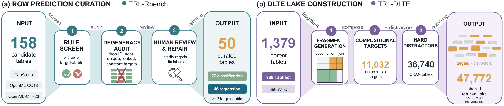
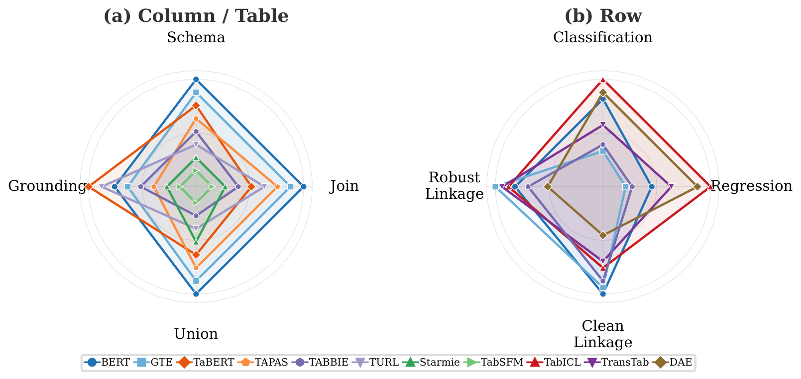

A Multi-Granular Tabular Representation Learning Benchmark
Tabular encoders span many paradigms — different inputs, training objectives, and output heads — so models are hard to compare even when they operate on similar tabular signals. TRL-Bench unifies them at the level of the representation: each model exports row-, column-, or table-embeddings through one shared wrapper, and lightweight shared heads probe them across 20 encoders, 16 tasks, and 87 datasets in three suites.
Tabular encoders are usually evaluated inside task-specific end-to-end pipelines, so a strong result may come from the wrapped predictor, training budget, and task-specific adaptation as much as from the encoder itself. TRL-Bench asks a comparability question: under one shared protocol over the exported representations, how do heterogeneous tabular encoders actually differ?
In encode-once, reuse-many settings, tables are embedded once and reused across tasks and large multi-table corpora such as data lakes. The representation — not the task-specific wrapper — becomes the object of evaluation.
Each model exports frozen row-, column-, or table-embeddings; shared lightweight heads (training-free, learned probes, or query-conditioned) read them out. Comparisons reflect the exported embedding under common readouts, not the choice of downstream predictor.
Many wrapped models were never built to emit embeddings — in-context predictors (TabPFN, TabICL), table-QA/parsing models (TAPAS, TAPEX, TaBERT), and self-supervised learners (SAINT, SCARF, SubTab, VIME). One shared wrapper turns each into a reusable tabular embedding model.
TRL-Bench treats retrieval, schema alignment, linkage, prediction, and grounding as atomic capabilities, and measures them at the granularities where embeddings are actually reused — columns and tables, rows, and their composition.
Column & table transfer · 13 tasks
Eight column-level and five table-level tasks across schema understanding, joinability, unionability, and grounding (table QA & retrieval). Twenty standardized column/table datasets; evaluated on the 10 of 20 models that natively expose column or table embeddings.
Row transfer · prediction + linkage
Within-table row prediction over 50 OpenML-derived tables with 123 hand-verified targets (77 classification, 46 regression), and cross-table record linkage over 16 datasets, split into Clean and Robust linkage. Tests whether one row embedding transfers both within and across tables.
Compositional · all three granularities
Multi-stage Data-Lake Table Enrichment over a 47,772-table lake built from 1,379 parent tables. Retrieve with table embeddings, align columns with column embeddings, match rows with row embeddings — a single composition test for the whole benchmark.

Curated assets. (a) TRL-Rbench row-prediction curation: 158 candidate tables pass rule screening, degeneracy audit, and human review with label repair into 50 tables with 123 targets. (b) TRL-DLTE lake assembly: 1,379 TabFact/WTQ parents are fragmented at four noise tiers; 11,032 targets are embedded alongside 36,740 CKAN distractors in a 47,772-table lake (parent-disjoint splits).
From a complete parent table we remove a block of rows (the union target) and a block of columns (the join target); the remainder is a seed query. Given only the seed and a data lake, a pipeline must recover both targets — composing table, column, and row embeddings across three stages.
Retrieve candidate tables from the 47,772-table lake using table embeddings (target recall@100), against 36,740 CKAN distractors.
Align columns and predict union / join / none using column embeddings, with thresholds calibrated on the development split.
Match rows across tables and merge content using row embeddings, recovering the removed cells end-to-end.
End-to-end union/join recall via UJ-H (their per-query harmonic mean), with Cell F1 as a complementary cell-recovery diagnostic.
A hands-off fly-through of the 1,120 TRL-DLTE pipelines — every Stage-1 × Stage-2 × Stage-3 combination, colored by end-to-end UJ-H. The cube auto-tours on loop; no controls to fiddle with.
Once downstream conditions are standardized, encoder quality is capability-specific rather than captured by a single leaderboard — and end-to-end quality depends on how capabilities compose, not on per-stage rank in isolation.
In TRL-CTbench, generic text encoders (BERT, GTE) lead where headers and short cell strings carry the signal, while tabular specialists win on cross-table alignment and grounding — e.g. Starmie tops Union Search (0.662 MAP) and Schema Matching (0.764 R@GT). Quality is capability-specific, not one leaderboard.
In TRL-DLTE, the best dev-selected hybrid TUTA/GTE/GTE reaches 0.229 UJ-H — 0.090 above the best monolithic BERT/BERT/BERT (0.139). Per-stage marginal leaders assemble to just 0.134. Composition is non-additive: capability-matched hybrids win.
In TRL-Rbench, within-table prediction and cross-table linkage reward different training scopes: prior-based TabICL leads prediction (AUROC 0.816), while transfer encoders lead linkage (BERT on Clean, GTE on Robust). DLTE Stage-3 row matching agrees with record linkage at |ρ|=0.80 — a shared identity-resolution capability.

No model spans every capability. Different encoder families peak on different capability axes — surface-text tasks reward generic text encoders, while cross-table alignment and matching reward structure-aware specialists.
No single encoder leads everywhere — the strongest model differs by suite and by capability.
End-to-end DLTE scores (UJ-H, higher is better). Headline pipelines are selected on the development split and evaluated once on test to avoid selection bias over 1,120 test evaluations.
| Pipeline (Stage 1 / 2 / 3) | Composition | Selection | UJ-H ↑ |
|---|---|---|---|
| Starmie / GTE / GTE | Hybrid | Test rank-1 | 0.253 |
| Starmie / BERT / TransTab | Hybrid | Dev marginals | 0.231 |
| TUTA / GTE / GTE | Hybrid | Dev-selected (headline) | 0.229 |
| BERT / BERT / BERT | Monolithic | Best monolith | 0.139 |
| Starmie / TABBIE / TransTab | Hybrid | Test marginals | 0.134 |
UJ-H is the harmonic mean of union- and join-recall. The dev-selected headline hybrid scores 0.229 (0.090 above the best monolith); the unrestricted test maximum is 0.253 (Starmie/GTE/GTE). Explore all 1,120 pipelines in the interactive viewer →
Read jointly, the three suites expose three structural gaps that single-paradigm evaluations cannot isolate: a specialization gap in model choice (CTbench), a transfer-scope gap between intra- and cross-table transfer (Rbench), and a composition gap where granularities interact rather than stack (DLTE).
If you find TRL-Bench useful for your research, please cite our work.
@article{pang2026trl,
title = {{TRL}-Bench: Standardizing Cross-Paradigm Representation-Level Evaluation of Tabular Encoders},
author = {Pang, Wei and Jian, Xiangru and Li, Hehan and Yu, Zhixuan and Xue, Alex and Li, Jinyang and Dong, Zhengyuan and Zhao, Xinjian and Xu, Hao and Zhang, Chao and Cheng, Reynold and {\"O}zsu, M. Tamer and Yu, Tianshu},
journal = {arXiv preprint arXiv:2606.09323},
year = {2026}
}
TRL-Bench spans three suites — TRL-CTbench (column/table), TRL-Rbench (row), and TRL-DLTE (compositional data-lake table enrichment).